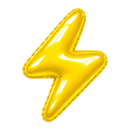

Power Sessions
An overview of your Claude and Codex sessions across your projects.
- See model, tokens, context and pull requests per session
- Spot token-heavy models and long conversations
- Compact a session directly, without switching to it
- Create quick actions for the scripts you run most often